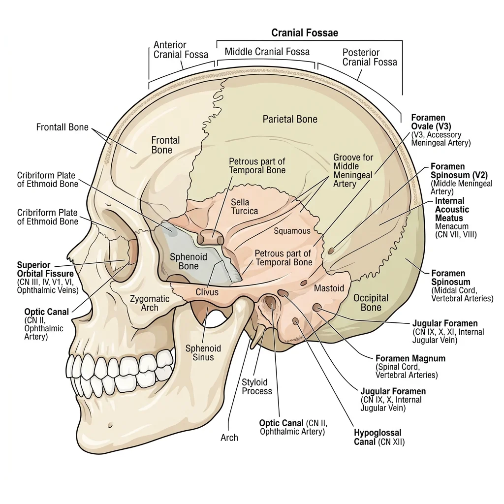
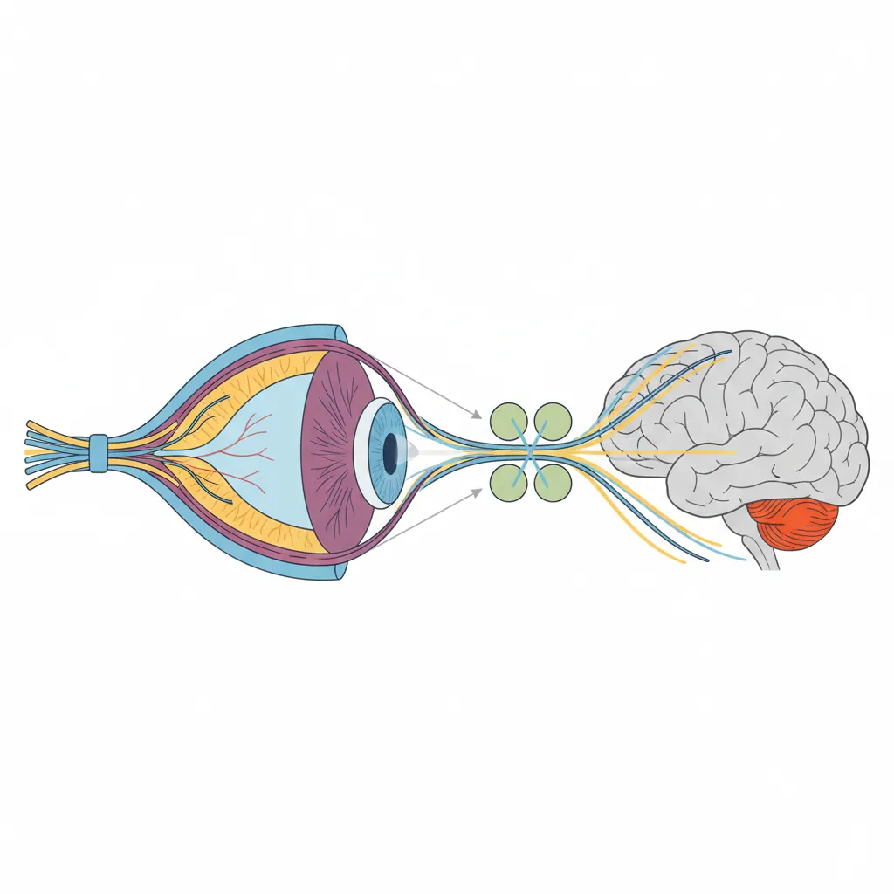
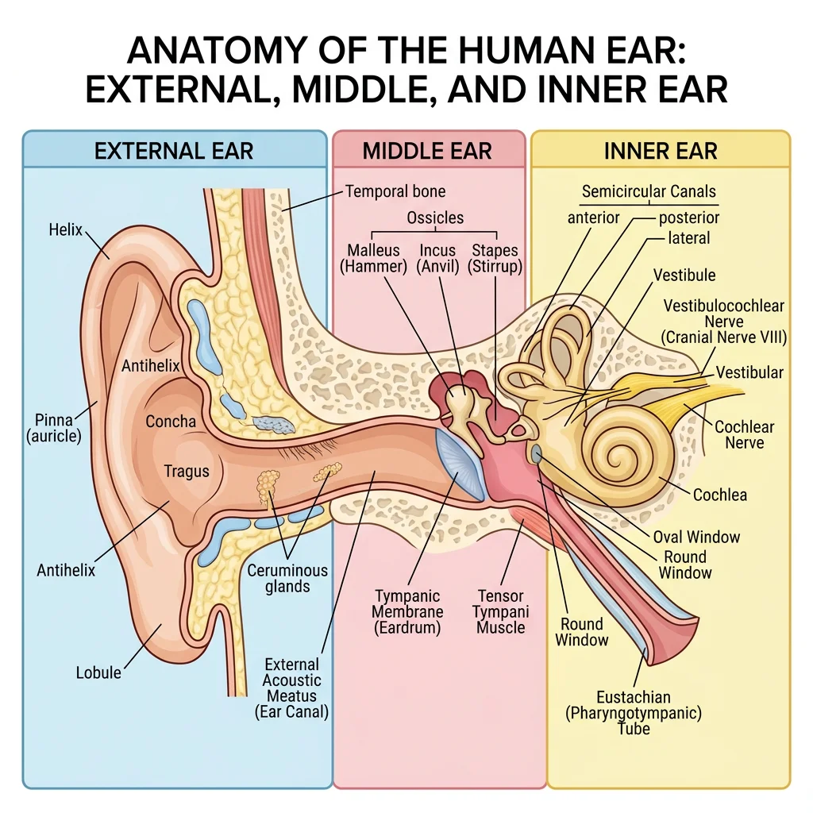
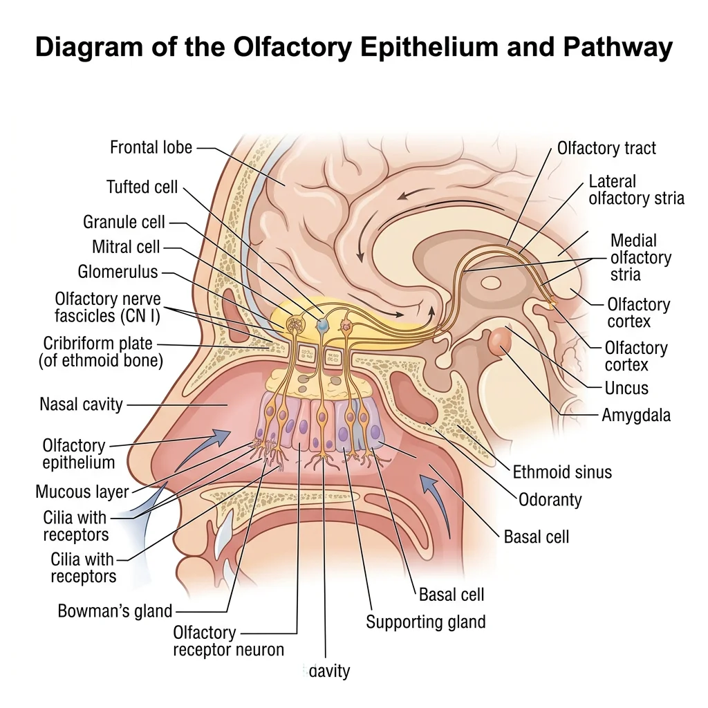
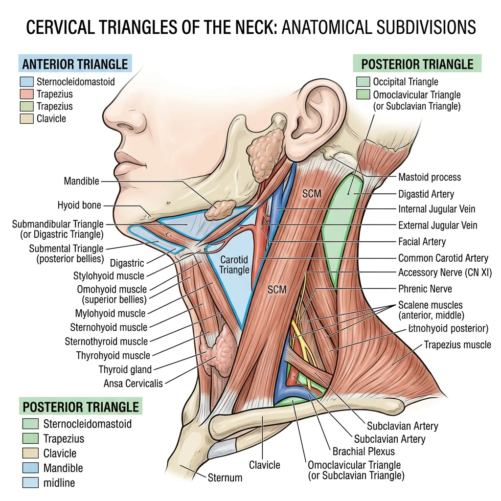
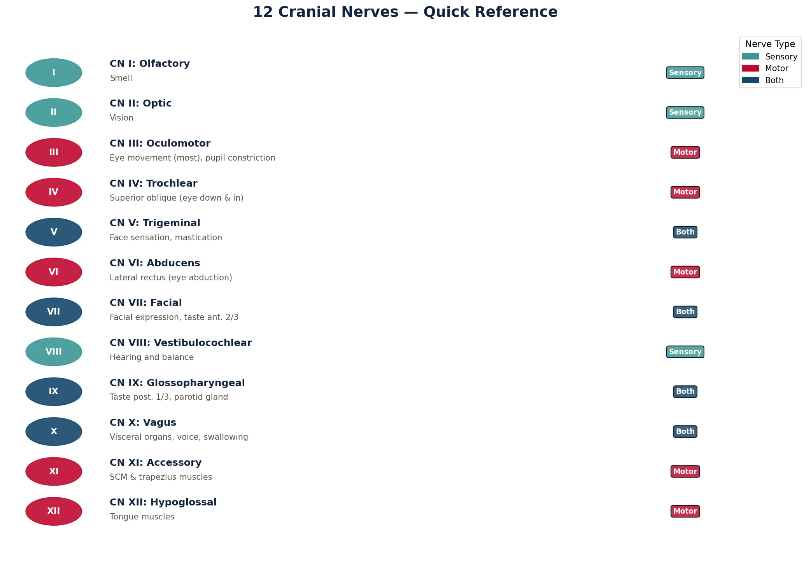

Human Anatomy Mastery
Anatomical Terminology & Body Planes
Directional terms, planes, cavities, tissuesSkeletal System & Joints
Osteology, axial & appendicular, arthrologyMuscular System & Movement
Muscle types, functional groups, biomechanicsCardiovascular & Lymphatic Anatomy
Heart, vessels, lymphatics, clinical linksNervous System & Neuroanatomy
CNS, PNS, autonomic, functional pathwaysVisceral Anatomy — Thorax & Abdomen
Thoracic & abdominal organs, peritoneumHead, Neck & Special Senses
Skull foramina, eye, ear, oral anatomySurface Anatomy & Clinical Imaging
Landmarks, X-ray, CT, MRI, proceduresHistology & Microscopic Anatomy
Cell ultrastructure, tissue & organ histologyEmbryology & Developmental Anatomy
Germ layers, organogenesis, malformationsFunctional & Applied Anatomy
Biomechanics, posture, gait, integrationRegional Dissection Mastery
Upper/lower limb, thorax, abdomen, pelvisHead & Neck Structures
The head and neck region is the most anatomically dense area of the human body. Within a small volume, it houses the brain, the beginnings of the respiratory and digestive tracts, all special sense organs, and a complex network of vessels and nerves. Understanding this region requires precise knowledge of bony landmarks, foramina through which critical structures pass, and the fascial compartments that organize the neck into predictable surgical territories.

Skull Foramina & Passages
The skull is composed of 22 bones (8 cranial, 14 facial) joined by sutures. Scattered throughout the cranial base and facial skeleton are foramina — openings that transmit nerves, vessels, and other structures between the cranial cavity and the exterior. Learning these foramina and their contents is one of the foundational tasks in head and neck anatomy.
The cranial base is divided into three fossae: anterior (frontal lobes), middle (temporal lobes), and posterior (cerebellum and brainstem). Each fossa contains characteristic foramina.
| Foramen | Location | Structures Transmitted |
|---|---|---|
| Cribriform Plate | Anterior Fossa | CN I (Olfactory nerve fibres) |
| Optic Canal | Middle Fossa | CN II (Optic nerve), Ophthalmic artery |
| Superior Orbital Fissure | Middle Fossa | CN III, IV, V1, VI; Superior ophthalmic vein |
| Foramen Rotundum | Middle Fossa | CN V2 (Maxillary nerve) |
| Foramen Ovale | Middle Fossa | CN V3 (Mandibular nerve), Accessory meningeal artery |
| Foramen Spinosum | Middle Fossa | Middle meningeal artery, Meningeal branch of V3 |
| Internal Acoustic Meatus | Posterior Fossa | CN VII, CN VIII, Labyrinthine artery |
| Jugular Foramen | Posterior Fossa | CN IX, X, XI; Internal jugular vein |
| Hypoglossal Canal | Posterior Fossa | CN XII (Hypoglossal nerve) |
| Foramen Magnum | Posterior Fossa | Medulla oblongata, Vertebral arteries, CN XI (spinal root) |
Andreas Vesalius and the Skull Base (1543)
In De Humani Corporis Fabrica, Vesalius provided the first accurate illustrations of the cranial base foramina, correcting centuries of Galenic errors. His detailed copper engravings of the skull base remain recognizable to modern anatomists and established the tradition of systematic foraminal cataloguing that medical students follow to this day.
Cervical Triangles
The neck is divided by the sternocleidomastoid muscle (SCM) into two major triangles, each further subdivided into smaller triangles. This organizational scheme is clinically critical — surgeons describe procedures, pathology, and lymph node levels by triangle location.
Anterior Triangle
Bounded by the midline, the mandible, and the anterior border of SCM. It contains four sub-triangles:
- Submental triangle: Floor of the mouth lymph nodes, submental vessels
- Submandibular triangle: Submandibular gland, facial artery, hypoglossal nerve (CN XII)
- Carotid triangle: Carotid bifurcation, internal jugular vein, CN X, XII, and superior laryngeal nerve
- Muscular triangle: Infrahyoid muscles, thyroid gland, trachea, oesophagus
Posterior Triangle
Bounded by the posterior border of SCM, the anterior border of trapezius, and the middle third of the clavicle. It contains:
- Occipital triangle: Accessory nerve (CN XI), cervical plexus branches
- Supraclavicular (subclavian) triangle: Subclavian artery (third part), brachial plexus trunks
Major Vessels & Nerves
The head and neck receive blood from the common carotid arteries (internal and external branches) and vertebral arteries. The venous drainage flows through the internal jugular veins and the vertebral venous plexus.
The external carotid artery supplies the face and scalp through eight named branches (Superior thyroid, Ascending pharyngeal, Lingual, Facial, Occipital, Posterior auricular, Maxillary, Superficial temporal — remembered by the mnemonic "Some Anatomists Like Freaking Out Poor Medical Students"). The internal carotid artery enters the skull through the carotid canal to supply the brain.
The Carotid Bifurcation as a Highway Interchange
Think of the common carotid artery as a major highway approaching a city. At the bifurcation (around the level of the thyroid cartilage, vertebra C3-C4), it splits into two roads: the external carotid exits take traffic to the suburbs (face, scalp, neck structures), while the internal carotid continues as the express route directly into the city centre (the brain). The carotid sinus at this junction acts as a speed camera — its baroreceptors detect blood pressure changes and send signals via CN IX to regulate heart rate.
Visual System
Vision is the dominant sense in humans, with approximately 50% of the cerebral cortex dedicated to visual processing. Understanding the anatomy of the eye and its neural pathways is essential for diagnosing conditions ranging from glaucoma to brain tumours based on visual field defects.

Eye Anatomy & Retina
The eyeball sits within the bony orbit, cushioned by fat and moved by six extraocular muscles. The globe itself has three layers:
- Fibrous tunic (outer): Sclera (white, protective) and cornea (transparent, refractive). The cornea provides two-thirds of the eye's refractive power.
- Vascular tunic (middle — uvea): Choroid (vascular supply), ciliary body (produces aqueous humour, controls lens shape), and iris (controls pupil diameter).
- Neural tunic (inner): The retina — containing photoreceptors (rods for dim light, cones for colour), bipolar cells, and ganglion cells whose axons form the optic nerve (CN II).
Optic Pathway & Visual Cortex
The visual pathway carries information from the retina to the primary visual cortex (V1) in the occipital lobe:
- Optic nerve (CN II): Axons from retinal ganglion cells exit via the optic disc (blind spot)
- Optic chiasm: Nasal fibres (from the medial retina) cross; temporal fibres remain ipsilateral
- Optic tract: Contains crossed nasal and uncrossed temporal fibres
- Lateral geniculate nucleus (LGN): Thalamic relay station in the diencephalon
- Optic radiation: Carries signals through the internal capsule to V1
- Primary visual cortex (V1): Located along the calcarine sulcus of the occipital lobe
The pattern of fibre crossing at the chiasm has profound clinical significance — a pituitary tumour compressing the chiasm from below damages the crossing nasal fibres, producing bitemporal hemianopia (loss of both temporal visual fields, creating "tunnel vision").
Auditory & Vestibular System
The ear serves a dual function: hearing and balance. Its anatomy spans the superficial (pinna) to deeply embedded temporal bone structures (cochlea, vestibular labyrinth). Understanding this anatomy is essential for diagnosing conditions from simple otitis media to complex vertigo syndromes.

External, Middle & Inner Ear
The ear is divided into three anatomical regions:
External Ear
The auricle (pinna) — a cartilaginous framework covered by skin — collects and directs sound waves into the external acoustic meatus, a 2.5 cm S-shaped canal lined with ceruminous glands. The canal terminates at the tympanic membrane (eardrum), a thin, semitransparent membrane that vibrates in response to sound pressure waves.
Middle Ear (Tympanic Cavity)
An air-filled space in the temporal bone containing the three ossicles — malleus (attached to the tympanic membrane), incus, and stapes (footplate in the oval window). These form a lever system that amplifies sound vibrations approximately 20-fold before transmitting them to the inner ear. The Eustachian tube (pharyngotympanic tube) connects the middle ear to the nasopharynx, equalizing pressure.
Inner Ear (Labyrinth)
Housed within the petrous part of the temporal bone, the inner ear contains two functional systems:
- Cochlea: A snail-shaped, fluid-filled structure containing the organ of Corti — the sensory receptor for hearing. Hair cells detect fluid vibrations and transduce them into neural signals carried by the cochlear division of CN VIII.
- Vestibular apparatus: Three semicircular canals (detecting rotational acceleration) and two otolith organs — the utricle and saccule (detecting linear acceleration and head position relative to gravity).
Hearing & Balance Mechanisms
Sound transduction: Sound waves cause the tympanic membrane to vibrate → ossicles amplify and transmit to the oval window → fluid waves travel through the cochlear scala vestibuli → basilar membrane vibrates → hair cells in the organ of Corti are deflected → mechanotransduction channels open → glutamate release → cochlear nerve activation. High-frequency sounds are detected at the base of the cochlea; low-frequency sounds at the apex (tonotopic organization).
Balance: Head rotation causes endolymph movement in the semicircular canals, deflecting hair cells in the ampullary crest. Linear acceleration/gravity is detected by hair cells embedded in the macula of the utricle and saccule, where tiny calcium carbonate crystals (otoconia) provide the inertial mass needed for detection.
Benign Paroxysmal Positional Vertigo (BPPV)
A 62-year-old woman presents with brief episodes of intense spinning when rolling over in bed or tilting her head back. The Dix-Hallpike test is positive, showing nystagmus after a brief latency. Diagnosis: BPPV caused by otoconia dislodging from the utricle and entering a semicircular canal (most commonly the posterior canal). The displaced crystals make the canal sensitive to gravity, triggering false signals of rotation. Treatment: The Epley manoeuvre — a series of head position changes that use gravity to guide the otoconia back into the utricle. Understanding the three-dimensional orientation of the semicircular canals is essential for performing this manoeuvre correctly.
Chemical Senses
Olfaction (smell) and gustation (taste) are the chemical senses — they detect molecules dissolved in air or saliva. Unlike vision and hearing, these senses have direct connections to limbic structures (amygdala, hippocampus), which is why smells and tastes can trigger powerful memories and emotions.

Olfactory Epithelium & Pathway
The olfactory epithelium is a specialized pseudostratified columnar epithelium located in the roof of the nasal cavity (superior nasal concha and adjacent septum). It contains approximately 10-20 million olfactory receptor neurons, each expressing one type of odorant receptor from a family of ~400 functional genes.
The olfactory pathway is unique among sensory systems — it is the only sense that does not relay through the thalamus before reaching the cortex:
- Olfactory receptor neurons in the epithelium detect odorant molecules
- Their axons (collectively CN I — the olfactory nerve) pass through the cribriform plate of the ethmoid bone
- Synapse in the olfactory bulb (glomeruli)
- Mitral/tufted cells project via the olfactory tract to the primary olfactory cortex (piriform cortex), amygdala, and entorhinal cortex
Gustatory Anatomy & Taste Buds
Taste buds are barrel-shaped clusters of 50-100 gustatory receptor cells located primarily on the tongue, but also on the soft palate, pharynx, and epiglottis. They sit within specialised papillae:
- Fungiform papillae: Mushroom-shaped, scattered across the anterior two-thirds of the tongue (~5 taste buds each)
- Circumvallate papillae: 8-12 large, dome-shaped papillae arranged in a V-shape at the posterior tongue (~250 taste buds each)
- Foliate papillae: Ridges on the posterolateral tongue edges
- Filiform papillae: Most numerous but contain no taste buds (mechanical/texture function)
The five basic taste modalities — sweet, salty, sour, bitter, and umami — are detected across all regions of the tongue (the old "tongue map" showing discrete zones is a myth). Taste innervation involves three cranial nerves: CN VII (facial — anterior two-thirds via chorda tympani), CN IX (glossopharyngeal — posterior one-third), and CN X (vagus — epiglottis and pharynx).
Oral & Pharyngeal Anatomy
The oral cavity and pharynx serve as the shared gateway for both the respiratory and digestive systems. Their anatomy determines how we speak, chew, swallow, and breathe — and understanding these structures is critical for managing airway emergencies.
Tongue & Salivary Glands
The tongue is a muscular organ composed of intrinsic muscles (change shape — longitudinal, transverse, vertical) and extrinsic muscles (change position — genioglossus, hyoglossus, styloglossus, palatoglossus). All tongue muscles except palatoglossus are innervated by CN XII (hypoglossal nerve).
Three pairs of major salivary glands produce approximately 1-1.5 litres of saliva daily:
| Gland | Location | Duct | Secretion Type | Innervation |
|---|---|---|---|---|
| Parotid | Anterior to ear, over masseter | Stensen's duct (opens opposite upper 2nd molar) | Serous (watery) | CN IX via otic ganglion |
| Submandibular | Floor of mouth, medial to mandible | Wharton's duct (sublingual papilla) | Mixed (serous + mucous) | CN VII via submandibular ganglion |
| Sublingual | Floor of mouth, under tongue | Multiple small ducts (of Rivinus) | Mostly mucous | CN VII via submandibular ganglion |
Pharynx & Swallowing Mechanism
The pharynx is a muscular tube extending from the skull base to the level of C6 vertebra, divided into three regions:
- Nasopharynx: Above the soft palate — contains the pharyngeal tonsil (adenoid) and Eustachian tube opening
- Oropharynx: Between soft palate and epiglottis — contains the palatine tonsils
- Laryngopharynx (Hypopharynx): Behind the larynx — leads to the oesophagus
Swallowing (Deglutition) occurs in three phases:
- Oral phase (voluntary): The tongue propels the food bolus posteriorly toward the oropharynx
- Pharyngeal phase (involuntary reflex): The soft palate elevates to close the nasopharynx; the larynx elevates and the epiglottis folds down to protect the airway; pharyngeal constrictors contract sequentially to push the bolus downward
- Oesophageal phase (involuntary): Peristaltic waves carry the bolus to the stomach
Swallowing as an Automated Railway Switch
Imagine the pharynx as a railway junction where two tracks converge: the airway (trachea) and the food passage (oesophagus). During breathing, the "switch" is set for the airway track. When you swallow, the switch automatically flips — the epiglottis drops like a level crossing barrier, the larynx rises to tuck under the tongue base (moving the airway out of the path), and the pharyngeal muscles create a peristaltic wave that pushes the bolus down the food track. The entire switch-and-push sequence takes less than one second and requires exquisite coordination of over 25 muscles.
Clinical Applications
The dense anatomy of the head and neck means that pathology in this region frequently produces characteristic clinical signs that can be localized based on anatomical knowledge. The following clinical scenarios illustrate how understanding anatomy translates directly into clinical diagnosis.

Facial Nerve Palsy
CN VII (facial nerve) has one of the most complex courses of any cranial nerve — from the brainstem through the internal acoustic meatus, along the facial canal in the temporal bone, and through the parotid gland to reach the muscles of facial expression. A lesion anywhere along this course produces facial weakness, but the pattern differs depending on the level.
| Feature | Upper Motor Neuron (UMN) Lesion | Lower Motor Neuron (LMN) Lesion |
|---|---|---|
| Forehead | Spared (bilateral cortical input) | Paralysed (cannot raise eyebrow) |
| Eye closure | Intact or mildly weak | Cannot close eye (Bell's phenomenon) |
| Lower face | Weak (drooping, flattened nasolabial fold) | Weak (drooping, flattened nasolabial fold) |
| Common cause | Stroke (contralateral cortex) | Bell's palsy, parotid tumour, temporal bone fracture |
Visual Field Defects
The anatomy of the visual pathway produces characteristic field defects depending on the lesion location:
- Optic nerve lesion: Monocular blindness (total loss in one eye)
- Optic chiasm lesion: Bitemporal hemianopia (pituitary tumour)
- Optic tract lesion: Contralateral homonymous hemianopia
- Optic radiation lesion: Contralateral homonymous quadrantanopia (temporal lobe = superior quadrant "pie in the sky"; parietal lobe = inferior quadrant "pie on the floor")
- Occipital cortex lesion: Contralateral homonymous hemianopia with macular sparing
Sinus Infections
The paranasal sinuses — maxillary, frontal, ethmoid (anterior and posterior), and sphenoid — are air-filled cavities within the facial and cranial bones that drain into the nasal cavity. The maxillary sinus is the most commonly infected because its ostium (drainage opening) is located high on the medial wall, requiring fluid to drain "uphill" against gravity — a design flaw that predisposes to infection.
Sinusitis can spread to surrounding structures: ethmoid sinusitis can cause orbital cellulitis (the lamina papyracea — paper-thin ethmoid bone — separates the sinus from the orbit), and sphenoid sinusitis can theoretically spread to the cavernous sinus, causing cavernous sinus thrombosis — a life-threatening emergency.
Airway Obstruction
Knowledge of head and neck anatomy is essential for managing airway emergencies. Key landmarks include:
- Cricothyroid membrane: The site for emergency cricothyroidotomy — located between the thyroid and cricoid cartilages, this membrane is accessible through the skin without significant overlying structures
- Tracheostomy site: Between tracheal rings 2-4, below the thyroid isthmus — a more controlled surgical airway
- Tongue base: The most common cause of airway obstruction in unconscious patients — the jaw thrust manoeuvre lifts the tongue forward by pulling the mandible anteriorly
Emergency Cricothyroidotomy
A 45-year-old man presents to the emergency department following anaphylaxis from a bee sting. Despite adrenaline administration, his upper airway is completely obstructed by oedema. Endotracheal intubation fails due to massive tongue and pharyngeal swelling. The emergency physician performs a cricothyroidotomy by palpating the cricothyroid membrane (the soft depression below the thyroid cartilage prominence — "Adam's apple"), making a transverse incision, and inserting a tube. The procedure restores the airway within 30 seconds. Anatomical basis: The cricothyroid membrane is the most superficial and accessible point of the airway below the glottis, with no major vessels or the thyroid gland in the immediate vicinity. This anatomy makes it the safest site for emergency surgical airway access.
Practice & Tools
Applied Code Example
This Python script creates a visual reference chart of the 12 cranial nerves with their key functions, helping you organize and memorize the essential features of each nerve:
import matplotlib.pyplot as plt
import matplotlib.patches as mpatches
import numpy as np
# 12 Cranial Nerves: Number, Name, Type, Key Function
cranial_nerves = [
("I", "Olfactory", "Sensory", "Smell"),
("II", "Optic", "Sensory", "Vision"),
("III", "Oculomotor", "Motor", "Eye movement (most), pupil constriction"),
("IV", "Trochlear", "Motor", "Superior oblique (eye down & in)"),
("V", "Trigeminal", "Both", "Face sensation, mastication"),
("VI", "Abducens", "Motor", "Lateral rectus (eye abduction)"),
("VII", "Facial", "Both", "Facial expression, taste ant. 2/3"),
("VIII", "Vestibulocochlear", "Sensory", "Hearing and balance"),
("IX", "Glossopharyngeal", "Both", "Taste post. 1/3, parotid gland"),
("X", "Vagus", "Both", "Visceral organs, voice, swallowing"),
("XI", "Accessory", "Motor", "SCM & trapezius muscles"),
("XII", "Hypoglossal", "Motor", "Tongue muscles"),
]
fig, ax = plt.subplots(figsize=(14, 10))
ax.set_xlim(0, 10)
ax.set_ylim(0, 13.5)
ax.axis('off')
ax.set_title("12 Cranial Nerves — Quick Reference",
fontsize=18, fontweight='bold', pad=20, color='#132440')
colors = {'Sensory': '#3B9797', 'Motor': '#BF092F', 'Both': '#16476A'}
for i, (num, name, nerve_type, function) in enumerate(cranial_nerves):
y = 12.5 - i * 1.0
color = colors[nerve_type]
# Number badge
circle = plt.Circle((0.6, y), 0.35, color=color, alpha=0.9)
ax.add_patch(circle)
ax.text(0.6, y, num, ha='center', va='center',
fontsize=11, fontweight='bold', color='white')
# Name and function
ax.text(1.3, y + 0.15, f"CN {num}: {name}",
fontsize=12, fontweight='bold', color='#132440')
ax.text(1.3, y - 0.2, function,
fontsize=10, color='#555555')
# Type badge
ax.text(8.5, y, nerve_type, ha='center', va='center',
fontsize=9, fontweight='bold', color='white',
bbox=dict(boxstyle='round,pad=0.3', facecolor=color, alpha=0.85))
# Legend
legend_items = [mpatches.Patch(color=c, label=t) for t, c in colors.items()]
ax.legend(handles=legend_items, loc='upper right', fontsize=10,
title="Nerve Type", title_fontsize=11)
plt.tight_layout()
plt.savefig('cranial_nerves_chart.png', dpi=150, bbox_inches='tight')
plt.show()
print("Chart saved as cranial_nerves_chart.png")
Head & Neck Exam Worksheet Tool
Use this interactive tool to document your head and neck anatomy observations. Record skull foramina identified, cervical triangle contents, special sense structures, and clinical correlations. Export your worksheet as Word, Excel, or PDF.
Head & Neck Examination Worksheet
Document your head and neck anatomy study observations. Download as Word, Excel, or PDF.
Conclusion & Next Steps
The head and neck region represents the pinnacle of anatomical complexity — a compact space containing the brain, all special sense organs, the beginnings of the airway and digestive tract, and a dense network of vessels and nerves. We explored the skull foramina and their contents, the cervical triangles that organize neck surgery, the complete visual and auditory pathways, the chemical senses of smell and taste, oral and pharyngeal anatomy including the swallowing mechanism, and clinical applications from facial nerve palsy to emergency airway management.
Mastering this region requires patience and repeated study, but the reward is the ability to interpret clinical signs — a drooping face, a visual field cut, vertigo, or difficulty swallowing — and trace them back to specific anatomical structures. In the next part, we'll shift from internal anatomy to the surface, learning the palpable landmarks and imaging techniques that allow clinicians to "see" anatomy in living patients.